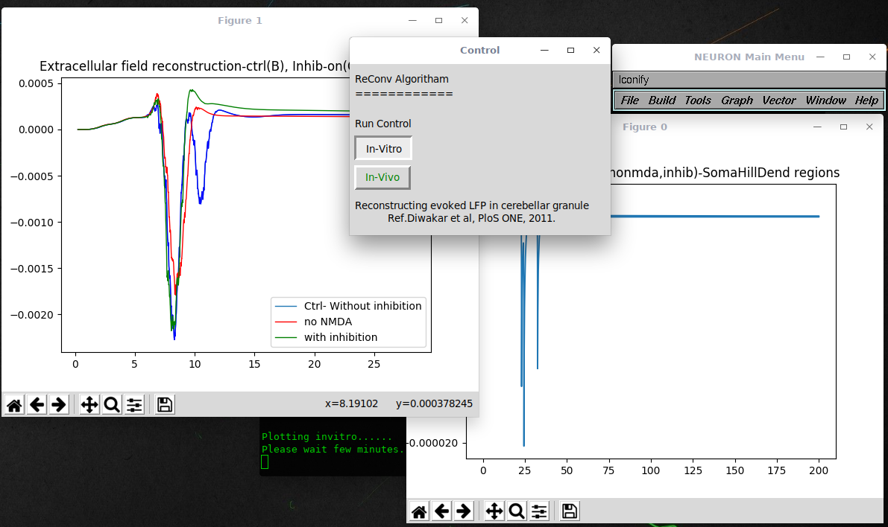
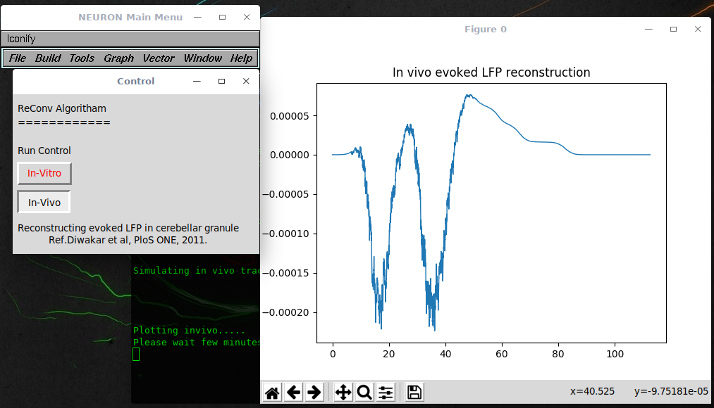

Reconstructing evoked LFP in cerebellar granular layer using jittered repetitive convolution (ReConv) This is the README for ReConv model for the paper Shyam Diwakar, Paola Lombardo, Sergio Solinas, Giovanni Naldi, Egidio D'Angelo. "Local field potential modeling predicts dense activation in cerebellar granule cells clusters under LTP and LTD control", PLoS ONE, 2011 6(7):e21928 Implementation was done by Shyam Diwakar in Neuron and Matlab. This Python version for Neuron+Python was implemented by Anandhu Presannan and Shyam Diwakar, Amrita School of Biotechnology, Amrita University, Kollam, Kerala, India. Usage instructions: Attention: For running the model using python3, "tkinter" package is required. The code, here, was originally meant for GNU/Linux systems. Auto-launch from ModelDB or download and extract the archive. Then under: ---- MSWIN run mknrndll, cd to the archive and make the nrnmech.dll. Then double click on the mosinit.py file. When the "Control Panel" menu pops, click on "in vitro" for invitro to generate evoked LFP signal and after completing the simulation, quit and restart before running for "in vivo" simulations. ---- MAC OS X run mknrndll, cd to the archive and make the nrnmech.dll. Then double click on the mosinit.py file. When the "Control Panel" menu pops, click on "in vitro" for invitro to generate evoked LFP signal and after completing the simulation, quit and restart before running for "in vivo" simulations. ---- Linux/Unix Change directory to the GrC folder. run "nrnivmodl". Then run "python3 mosinit.py" When the "Control Panel" menu pops, click on "in vitro" for invitro to generate evoked LFP signal and after completing the simulation, quit and restart before running for "in vivo" simulations. ----   Attention: For run the model python3 "tkinter" package required. The GrC model used here was published as (Diwakar et al., 2009) Shyam Diwakar, Jacopo Magistretti, Mitchell Goldfarb, Giovanni Naldi, and Egidio D'Angelo. Axonal Na+ channels ensure fast spike activation and back-propagation in cerebellar granule cells. J Neurophysiol (December 10, 2008). doi:10.1152/jn.90382.2008 Available at http://senselab.med.yale.edu/ModelDb/showmodel.asp?model=116835